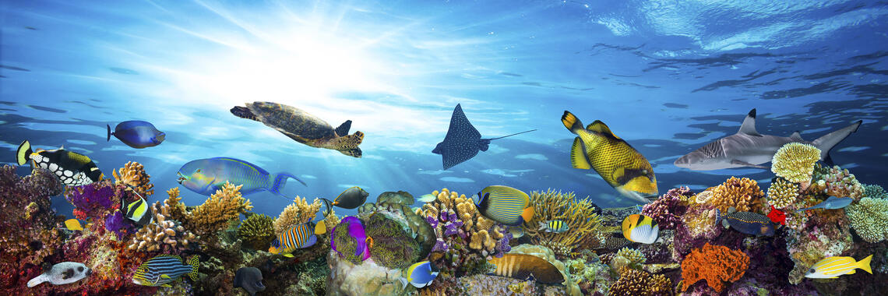
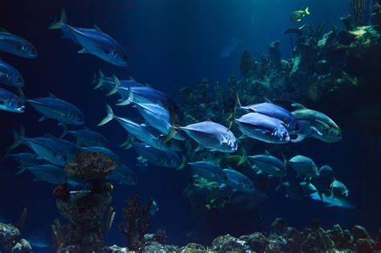

|

Beneath the Surface: Discovering the World of Seafish ! | |||
|
Sea fishes, also known as marine fishes, inhabit the oceans and seas around the world. They are incredibly diverse in terms of species, sizes, shapes, and habitats. |
|||
|
Habitats: Sea fishes can be found in a wide range of habitats within the oceans, including coral reefs, open water, deep-sea trenches, kelp forests and more. Each species has evolved to adapt to its specific environment. Biodiversity: The world's oceans are home to an immense variety of fish species, ranging from small, brightly colored reef fish to large, deep-sea predators like sharks and tuna. This biodiversity is essential to maintaining the balance of marine ecosystems.  Commercial Importance: Many sea fishes are of significant economic importance due to their use in fisheries and the seafood industry. Species like cod, salmon, tuna, and haddock are commonly harvested for human consumption. Bioluminescence: Many deep-sea fishes possess bioluminescent properties, producing light through chemical reactions. This adaptation helps them communicate, find prey, and even camouflage themselves in their dark habitats. Remember that sea fish are an integral part of marine ecosystems, playing vital roles in maintaining the balance of ocean life. It's important to support sustainable fishing practices and marine conservation efforts to ensure the health and diversity of these species and their habitats. |
|||